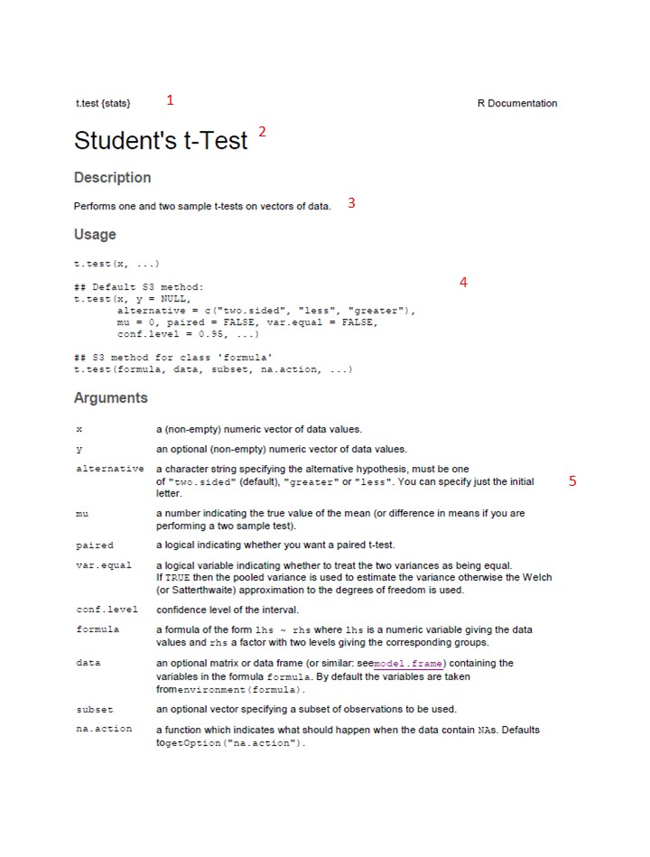

Chapter 4 Getting R help
The first place most people go for R help is the “Help” tabe in the “Files/Plots/Packages/Help” pane on thue console (described in Chapter 4). Here you can do a search by topic/term using the search window at the top right. You can also click the “house” icon to go to the home menu for the help files and use the table of contents there to navigate to what you are looking for.
4.1 Using R help
The hardest part about R help files is that at first they don’t seem that helpful, and to new R users, they seem to be written in code. However, all of the help pages are structured the same way, so once you learn how to de-code them, you’ll be well on your way. Below is an example of how to interpret R help files
4.2 R “Cheatsheets”
Because R is open source software, there is also a culture of open access help. Several R programmers have made helpful “cheatSheets” that are worth printing off and hanging by your desk. Try this one by Tom Short for starters.
4.3 R books
As with the cheatsheets, there are open access books out there (as well as expensive ones to buy). For beginners, “The Pirates Gude to R” by Nathaniel D. Phillips is HIGHLY recommended. You can access it here
4.4 How to interpret R help files
R documentation follows the following format. As an example, we’ll use the screenshot below for a really simple statistical command (the t-test) to walk you through the R documentation. Numbers below correspond to the labels on the screenshot.
header This simply gives the command for the thing you are trying to do, in R language
Title This is a title of the function/command/tool in more plain language
Description This section provides a short description of what the command does, written in reaonably plain language
Usage This is where you see an example of R code that you use to execute the command (TIP you can tell what text in the help file is R code and what is other information by the font. Example code is in Courier font). Any example prefaced teh two hashtags (“##”) is a comment that adds additonal descitpion or provides different options for the comment. For example, for the t-test here, the first exampe is for the default method, where you are doing a t-test for a difference between two numeric vectors of data values (“x” and “y”). The second example is where you are applying the t-test to a formula instead of two numeric vectors. Until you start doing more advanced statistics, the default method will usually be what you use.
Arguments This section breaks down every element in the R code under “Usage” above it and describes what the input is that you need to provide. It also gives you details about the options as well as what the defaults are. For example, for the t-test documentation here, it tells you that “x” is “a (non-empty) numeric vector of data values”. It also tells you that this is what “y” is but not that it tells you that “y” is optional (i.e., you can do a t-test on just one vector of data values). This fact is also shown in the example code where it says “y = NULL”).
Note that you often do not have to input ALL the arguments. If you are happy with the defaults you don’t have to type in the code. For example, the description of the argument “alternative” tells you that you can specify whether the alternative hypothesis is two-sided (i.e., two-tailed), or one-tailed, in which case you have to say whether the alternative hypothesis is that the second set of data (e.g., the treatment) are greater or less than the first (e.g., the control). The default is that you are assuming the alternative hypothesis is two-sided. If this is what you want, then your code only needs to look like this
t.test(x, y)
However, if you want a one-sided test, and your alternate hypothesis is that the treatment (y) is greater than the control (x), then you need to type a bit more code, like this:
t.test(x, y, alternative = c("greater"))
Details This sectin gives you a little more detail (written a bit more like a stats text) about what the function is doing. For more advanced functions, there may be details on the types of inputs allowed and other caveats. This section is really helpful to read closely!
Value This section lists the objects (output) created when you execute the command. The relevance of this list will become more clear once you start using R.
See Also This section is usually just links to similar commands to the one you are reading up on, or related to it somewhow. These can be useful to explore when doing more complex statistical tests, or if you are not sure which test you should be using. Clicking the link will just take you to the Documentation page for that command, which will be set up exactly the same way as this one.
9 Examples This gives sample code and output. If you have installed the necessary package(s) to run this code, you can just try the code out yourself by typing the code exactly as shown in the example in the Console window of RStudio. It will call data that comes built in with the package when you installed it and can be a helpful way for you to understand how the command is working before you try it with your own data.
